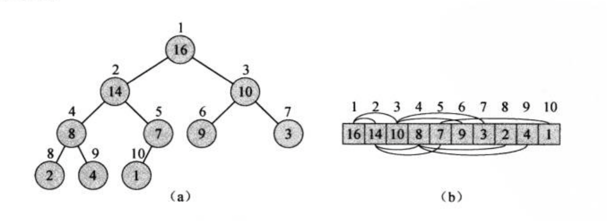
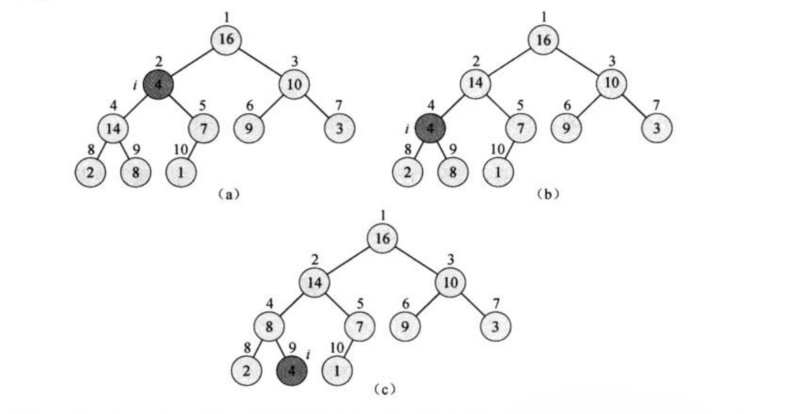
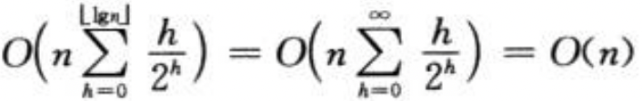
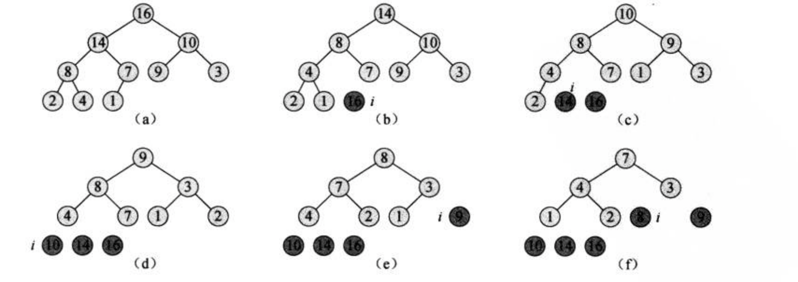

排序和顺序统计量
排序和顺序统计量
排序算法 插入排序最坏情况下可以在时间内将个数排好序。但是由于其内层循环非常紧凑，对于小规模输入，插入排序是一种非常快的原址排序算法(输入数组中仅有常数个元素需要在排序过程中储存在数组之外)。归并排序有更好的渐进运行时间，但归并过程不是原址的。
顺序统计量 一个个数的集合的第个顺序统计量就是集合中第小的数。
堆排序
堆排序与归并排序一样，但不同于插入排序，堆排序的时间复杂度为；与插入排序相同，但不同于归并排序的事，堆排序同样具有空间原址性：任何时候都只需要常数个额外的元素空间储存临时数据。
堆排序引入“堆”这个数据结构来管理信息，堆不仅用于堆排序，也可以构造一种有效的优先队列。
堆
二叉堆是一个数组，可以被看成近似的完全二叉树。除最底层外完全充满，而且是从左向右填充。表示堆的数组A有两个属性：A.length表示元素个数，A.heap-size表示有多少堆元素，表示的是堆有多少个有效元素，因此A.length>=A.heap-size.这里设根节点为A[1]
将数组在逻辑上排列成如图所示

则我们可以观察出对于给定的下标，我们如何访问父节点(除以2取整)和左右子节点(分别为和)。大多数计算机可以通过左移或右移在一条指令时间内计算出父节点和左子节点。堆排序好的实现中，这三个访问函数通常作为宏或内联函数。
二叉堆分为最大堆和最小堆，上图就是一个最大堆，它需要满足任何一个节点的值一定小于等于其父节点，因此根节点一定是最大的。最小堆则相反，根节点一定是最小的，且对每一节点都满足节点值大于等于父节点值。
把堆看成一棵树，定义堆中节点的高度就是该节点到叶子节点最长简单路径上边的数目，进而用根节点的高度来定义堆的高度，因此堆的高度是。
下面分成几部分拆解堆排序的过程
维护堆的性质
想象这样一种情况，根节点的左右子树都是最大堆，但根节点本身可能小于左子节点或右子节点，因此对整个堆而言违背了最大堆的性质，我们采用让根节点逐级下降的方式调整堆，使它找到自己合适的位置。A为整个数组，i为需要调整的位置，LEFT，RIGHT，PARENT分别代表获取左子节点，右子节点和父节点的位置。
1 | MAX-HEAPIFY(A, i) |
过程如图所示

分析上式时间代价：调整根、左、右三个元素的关系的时间代价，加上在一棵以的一个孩子为根节点的子树上递归的时间代价，每个孩子的子树大小至多为，在树的最底层恰好半满时，设左半部分满，则左子树占整个树的部分最大。设总共层，则根节点左子树有个节点，底层半满情况下，整个树共有个节点（除最后一层外都是规律的，最后一层要除以2），显然，比值具有上界。
因此有
根据主定理，解为。因此若树高为，该算法时间复杂度就为，因为高度和总节点数存在对数关系。
建堆
采用自底向上的方法将某乱序数组转化为最大堆。每个叶子节点看成是只包含一个元素的堆，因此只需从倒数第二层的最右侧开始，从右向左、从下向上建堆，这样可以确保实际最大的元素慢慢浮到最顶端的根节点。
1 | BUILD-MAX-HEAP(A) |
估算一下时间上界，for循环是，每次维护堆是，因此共计。实际上可以更精确的估计一下：包含个元素的堆的高度为(设有k层，则总节点数的范围是，因此)，对于任意一个包含个元素的堆中，至多有个高度为h的节点，因此总代价为

堆排序算法
首先把某数组建成最大堆，虽然并不是完全有序，但我们可以保证最大元素一定是根节点，我们将这个最大节点与最右侧的叶子节点(最后一个节点)互换，最大元素就到了正确的位置，这个时候我们再对除了末尾的那个最大元素以外剩下的元素重新维护最大堆，只不过这时候堆就比原来少了一个固定好位置的那个元素了，不断重复这个过程，从大到小的元素逐渐放到正确的位置，堆也逐渐变小，直到剩下2个，至此已经完全排好顺序。
1 | HEAPSORT(A) |

灰色代表固定好位置后，不再参与后续的排序。
优先队列 优先队列的每个元素都有一个关键字用来排序，一个优先队列中应当有以下几个操作：插入，返回最大元素，去掉最大元素，增加某元素的关键字值
最大优先队列的应用：共享计算机系统的作业调度，一个作业完成后，选出最大元素代表的作业(最高优先级)执行，通过插入某元素到正确的位置可以把一个新作业加入到队列中。